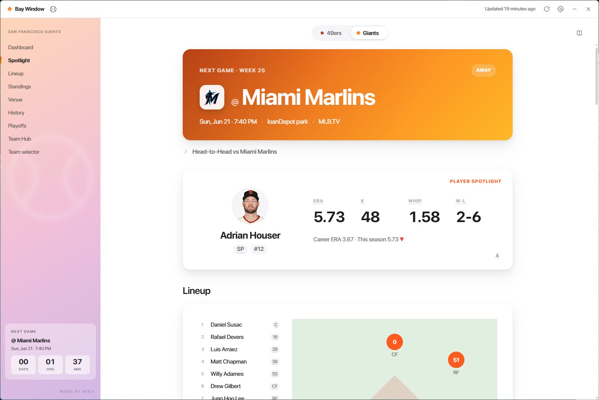
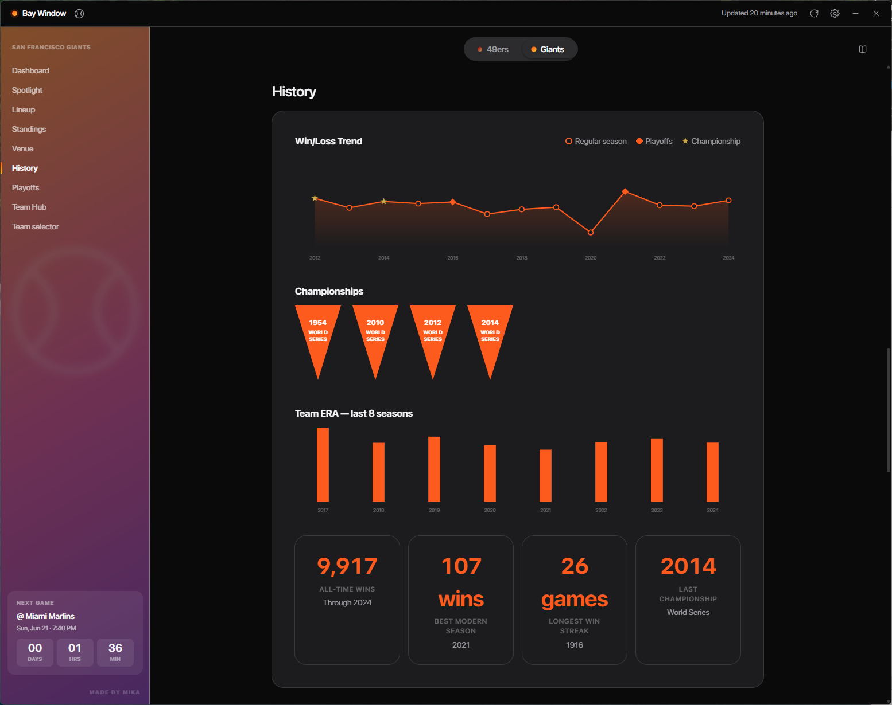
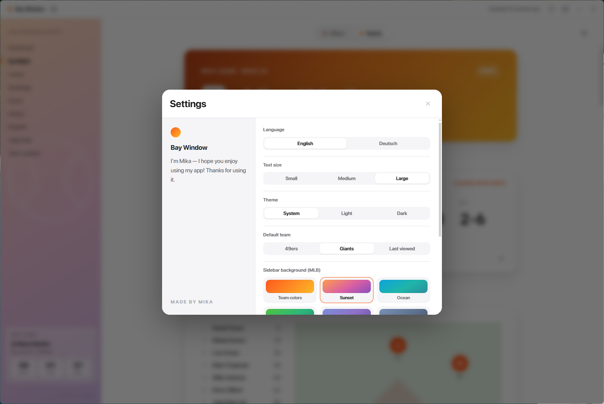
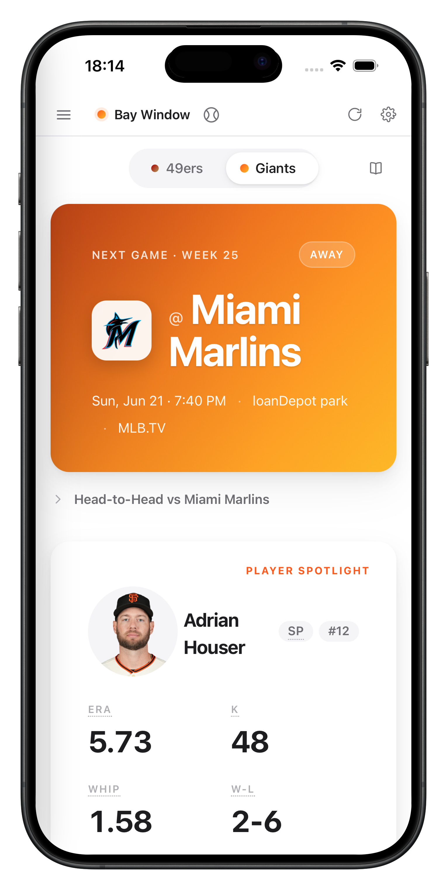
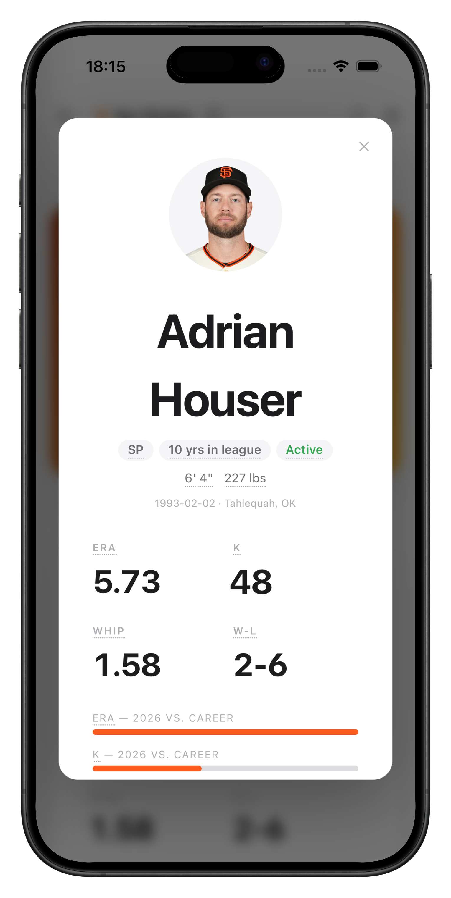
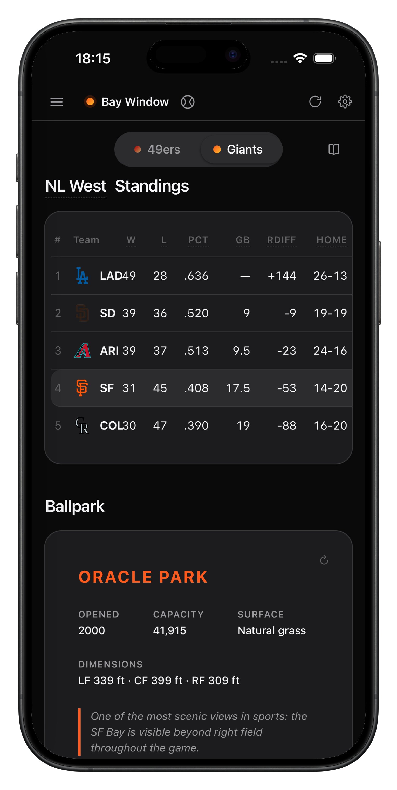
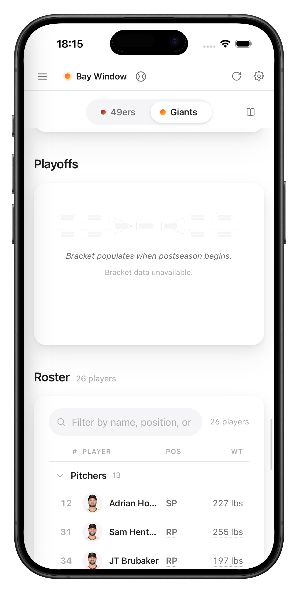
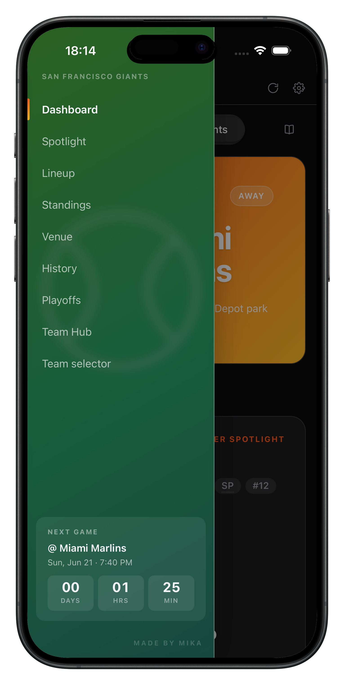

Ein persönliches Sport-Dashboard als native Desktop-App — gebaut für den kurzen Blick beim Hochfahren. Der Cache zeigt sofort relevante Daten, während im Hintergrund frische Stände nachgeladen werden. Standardmäßig die San Francisco 49ers (NFL) und Giants (MLB) — jedes der 32 NFL- bzw. 30 MLB-Teams lässt sich als aktives Team wählen.

Jeder Endpunkt wird unabhängig abgerufen — fällt einer aus, bleiben die übrigen Bereiche funktionsfähig. Fehlende oder fehlerhafte Daten werden zu „—“ statt zu einem Absturz.
Hero-Karte zum nächsten Spiel mit Gegner, Anstoßzeit, Spielort und TV-Sender — inklusive Countdown bis zum Kickoff.
Automatisch gewählte Schlüsselspieler-Karte (QB bzw. Starting Pitcher) mit Saisonwerten und Trend gegenüber dem Karrieremittel.
Visuelle Aufstellung auf Feld oder Diamond, angepasst an die Sportart — Offense-Gruppen im Football, Feldpositionen im Baseball.
Vollständige Standings mit W/L, Heim/Auswärts, Run-Differential und Streak — plus Glossar-Tooltips für jede Abkürzung.
Stadiondaten (Baujahr, Kapazität, Maße, Belag) neben kuratierter Saisonhistorie: Trendkurven, Meistertitel, All-Time-Rekorde.
Filterbare Kaderliste nach Positionsgruppe, suchbar nach Name und Nummer — plus automatische Playoff-Brackets in der Postseason.
Die History-Ansicht verdichtet Jahrzehnte in wenige Blicke: eine Win/Loss-Trendkurve über die letzten Saisons, die Meistertitel als Banner-Reihe und die Team-ERA der jüngsten Jahre als Balken.


NFL und MLB teilen sich dieselbe Oberfläche — der Team-Selektor wechselt zwischen allen 62 Teams, die Glossare und Diagramme passen sich der Sportart an. Einstellungen für Sprache (DE/EN), Theme und Standardteam sind ein Klick entfernt.
Dieselbe defensive Architektur, dieselben Daten — responsiv vom Desktop bis aufs Telefon. Die Seitennavigation merkt sich die Scroll-Position, sodass sich Bereiche sofort anspringen lassen.





Cache-first und ausfallsicher: Daten sind beim ersten Start sichtbar, jeder API-Aufruf läuft isoliert, und Updates kommen signiert über GitHub.
Die App ist auf geringe kognitive Last und schnelles Scannen ausgelegt. Der Cache-first-Ansatz macht Daten beim Start sofort sichtbar; die Seitennavigation mit Scroll-Tracking lässt zwischen Bereichen springen. Tooltips erklären durchgehend die Fachbegriffe — auch für alle, die mit US-Sport (noch) nicht vertraut sind.
Der Quellcode wird bald öffentlich auf GitHub verfügbar sein.